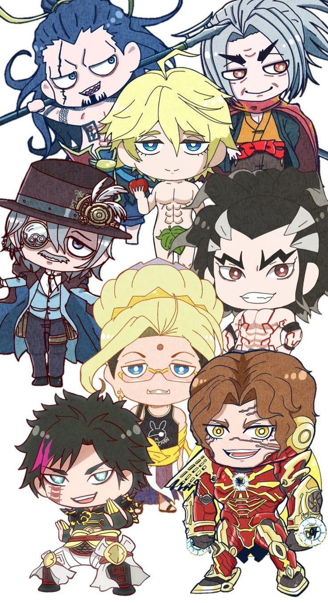

Sobre
Sobre


Humanidade
O Conselho dos Deuses, formado por deuses de diferentes mitologias e liderados por Zeus, o líder do panteão dos deuses gregos, se reúne uma vez a cada milênio para decidir o destino da humanidade, decidindo que os 7 milhões de anos de história irremediável da humanidade justificam sua extinção. Mas a valquíria Brunilda decide defender a humanidade e propõe dar aos humanos uma última chance de provar seu valor. Dessa forma, os deuses concordam em realizar o torneio de Ragnarok, onde a humanidade será poupada se vencer os deuses em sete das treze partidas. Os representantes da humanidade são os Einherjar, humanos notáveis ao longo da história. Cada um recebe a ajuda de uma Valquíria, cujos corpos se transformam em armas poderosas e sob medida para o estilo de combate de seu usuário, chamadas "Völundr". Nesse processo, as Valquírias correm o risco de perder suas vidas se o usuário humano for morto durante o combate.
